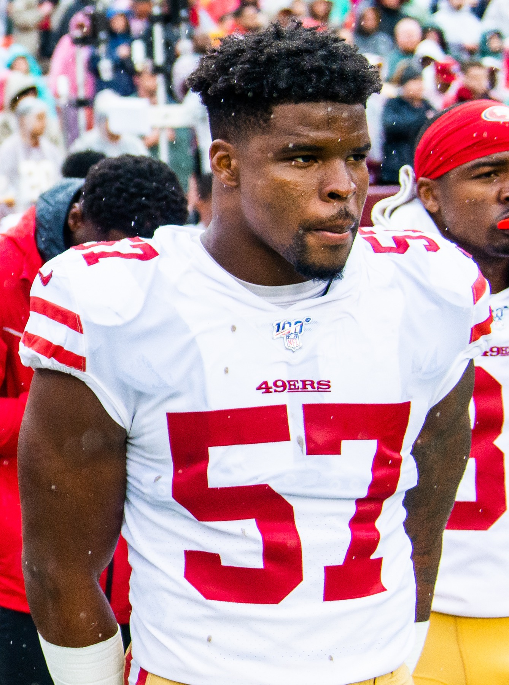

Dre Greenlaw Suspended One Game for the Head Butt in Seattle
One game, no pay, about $176,000 gone, and our angriest linebacker watching Monday night from home. I love the guy. I'm also tired of this.

I knew it was coming. I knew it Sunday the second the camera found Ernest Jones without his helmet on and Dre Greenlaw's face mask about two inches from his forehead. I said it out loud to nobody in my living room. That's a suspension. And then I spent the rest of the game trying to forget I'd said it, because we were busy beating the champs.
Monday the league made it official. One game, no pay. Greenlaw sits Monday night against Washington.
And I'm annoyed. Not at the league, really. At Dre.
What actually happened in Seattle
Quick refresher, in case you've blocked it out. (Our full Seattle reaction is right here.) About six and a half minutes left in the first half, Sam Darnold scrambles out of bounds on the Seattle sideline and Greenlaw hits him late. Flag. Fine. That one's a football play, a dumb one, but a football play. Then the whole Seahawks sideline comes at him, and in the middle of it Greenlaw puts his helmet into Ernest Jones IV, who doesn't have his on.
Ejected on the spot. The league says he broke Rule 12, Section 3, Article 1, the one about "any act which is contrary to the generally understood principles of sportsmanship." Which is the NFL's fancy way of saying you can't head butt a guy who isn't wearing a helmet. I didn't need a rulebook for that one. Neither did Dre.
It's going to cost him roughly $176,000 in salary, and that's before any fine they stack on top.

This is a pattern now, and I hate saying that
I've defended Greenlaw for years. I'll probably keep defending him. He plays like every snap is the last one he'll ever get, and after what happened to his Achilles in the Super Bowl I'm not going to lecture a guy about how hard he plays.
But look at the list. Sunday was his third career ejection. He got tossed in 2022 for the late hit on Justin Herbert. He got tossed in 2023 after the sideline mess against the Eagles. Last year in Denver the league suspended him a game for running at referee Brad Allen and threatening him. And literally last week, the week before Seattle, he got fined $11,941 for screaming at the Broncos sideline and Sean Payton during our win over his old team.
That's two one game suspensions in two years. At some point it stops being fire and starts being a liability, and I think we're there. I don't want him to change how he plays. I want him to stop doing the one thing that gets him taken off the field. Those aren't the same thing, Dre.
The appeal
He's appealing, and the hearing is Tuesday. It'll go in front of one of the officers the league and the union picked together: Derrick Brooks, Jordy Nelson, Ron Rivera or James Thrash. Shanahan said he hopes they can get it rescinded, then basically admitted we'll have to wait and see how that goes, which is coach for I wouldn't bet on it.
I wouldn't either. Getting ejected already cost us him for most of a game we nearly lost. Honestly, if I'm the league, I don't see a lot of room to wiggle on a helmet to a bare head. I'd love to be wrong. I'll take a surprise.
The good news is Jaden Dugger
One thing does make me feel a little better. When Greenlaw walked to the locker room in Seattle, a fifth round rookie walked into his spot and didn't look scared for a second.
Jaden Dugger is 6 foot 5, and he played 47 snaps at weakside linebacker in the loudest building in the league. He had 9 tackles and his first career sack, coming off the edge past Abraham Lucas. He was in coverage on 21 snaps and gave up three catches for 18 yards. Shanahan said he thought Dugger played really well in that spot, and Kyle doesn't hand that out to rookies for fun.
The problem is behind him. Garret Wallow strained his hamstring and he's out for multiple weeks. Luke Gifford, who's really a special teams guy, had to play 19 snaps on defense Sunday as the third linebacker. So we're not just missing Greenlaw Monday night. We're missing Greenlaw with the room already thin, against a Washington offense that'll be looking for exactly that soft spot.
We're 5 and 0 with Bosa out, the defensive line held together with tape, and now the linebacker who's supposed to be the emotional engine of the thing watching from home. Of course we are. Of course this is how it goes.
Monday night
I still think we win the game, and I said why in the 5 and 0 column. Fred Warner's out there, Dugger just proved he belongs, and Purdy should pass 1,500 career attempts sometime in the first quarter. If Bosa makes it back, the whole defensive picture changes. One game without Greenlaw isn't going to sink this team.
But I want Dre back on October 20 and I want him to stay out of the principal's office for the rest of the year. We need the guy who had 12 tackles against Denver two weeks ago, not the guy walking off the field in the second quarter in Seattle. You can be the meanest player on the field without getting yourself sent home.
Be mad, Dre. Just be mad between the whistles.
More coverage: 49ers · 49ers 2026 schedule · 49ers injury report · 49ers depth chart · NFL